Acute Monoarthritis
- Acute monoarthritis = one inflamed joint for < 6 weeks. The differential: infection, infection, infection, gout, pseudogout, and “did I mention infection?” All three can look identical, fever included.
- If the joint is red, aspirate it. Send for the 3 C's: cell count, culture (+ Gram stain), crystals. Septic arthritis is a medical emergency: ortho for I&D and IV antibiotics.
- Gout: needle-shaped, negatively birefringent urate crystals; first MTP in 50%; men 35–50 or women after menopause; diuretics, alcohol, renal impairment. Serum urate can be normal during an attack, and hyperuricemia alone doesn't diagnose or need treating.
- Acute gout: intra-articular steroid, NSAID (indomethacin 50 mg TID), colchicine or a prednisone taper. Allopurinol (xanthine oxidase inhibitor) is lifelong: for recurrent attacks or tophi; don't start it mid-attack, cover it with NSAID/colchicine prophylaxis, aim for urate < 360 µmol/L.
- Pseudogout (CPPD): rhomboid, positively birefringent, intracellular crystals; older people with OA; the knee; slower and less intense than gout but lasts longer. Chondrocalcinosis is the x-ray finding, not the attack.
Learning Objectives
- Define and distinguish mono-, oligo- and polyarthritis.
- Determine a differential diagnosis for acute and chronic monoarthritis.
- List the common pathogens for septic arthritis and outline a management plan.
- Distinguish the two commonest non-infectious acute monoarthritides, gout and pseudogout: presentation, risk factors, investigations and treatment.
Three short recordings (28 min) by Dr. G. Rohekar (rheumatology), one patient each: Mr. Williams' ankle (septic arthritis), Mike's toe (gout), Mary's knee (pseudogout). Septic arthritis is covered in depth in 11.1. Mono = 1 joint, oligo = 2–3, poly = 4 or more (Dr. Jiang's definitions in 11.3; JIA counts differently).
The Approach to a Hot Joint
| Acute hot, red monoarthritis |
|---|
| 1. Infection 2. Infection 3. Infection 4. Gout 5. Pseudogout 6. “Oh, did I mention… infection?” Rarer: reactive arthritis, psoriatic arthritis. |
“If the joint is red, aspirate it!” (“To inject is human, to aspirate divine.”)
| The 3 C's | Turnaround |
|---|---|
| Cell count | A couple of hours |
| Culture and sensitivity (and Gram stain, which is quick) | 24–48 hours |
| Crystals (polarized microscopy) | A couple of hours |
| The three cases | Cell count (×109/L) | Culture | Crystals | Diagnosis |
|---|---|---|---|---|
| Mr. Williams, 62, ankle | 59 | Gram-positive cocci in clusters | None | Septic arthritis |
| Mike, 48, big toe | 15 | No growth at 24 h | Needle-shaped, negatively birefringent | Gout |
| Mary, 78, knee | 18 | No growth at 24 h | Rhomboid, intracellular, positively birefringent | Pseudogout |
All three counts are inflammatory; only the septic joint is in the very high range, and the counts overlap, which is why you need the culture and the crystals.
Mr. Williams' Sore Ankle: Septic Arthritis
62, lives alone, diabetes (metformin, glyburide), right knee replacement for OA. Unwell; left ankle suddenly painful, warm and red after a pedicure. T 38.6°C, flushed, can barely bear weight.
Septic Arthritis
Acute bacterial arthritis is a medical emergency: without fast detection and treatment it causes fulminant joint damage.
| Risk factors | |
|---|---|
| Systemic | Immunosuppression: diabetes, cancer, drugs (methotrexate, leflunomide, prednisone, anti-TNF and other biologics); age (very young or old); alcohol excess, IV drugs; a recent infection |
| Local | Prosthetic joint; recent joint surgery; an abnormal joint (e.g. arthritis); penetrating trauma; skin infection |
Route: hematogenous spread from a remote site is #1; then direct inoculation (penetrating trauma, surgery) and spread from a contiguous site (infected bone).
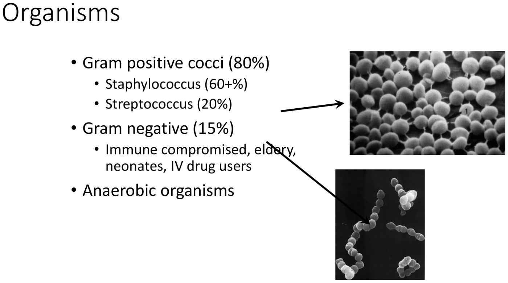
Organisms. From the deck.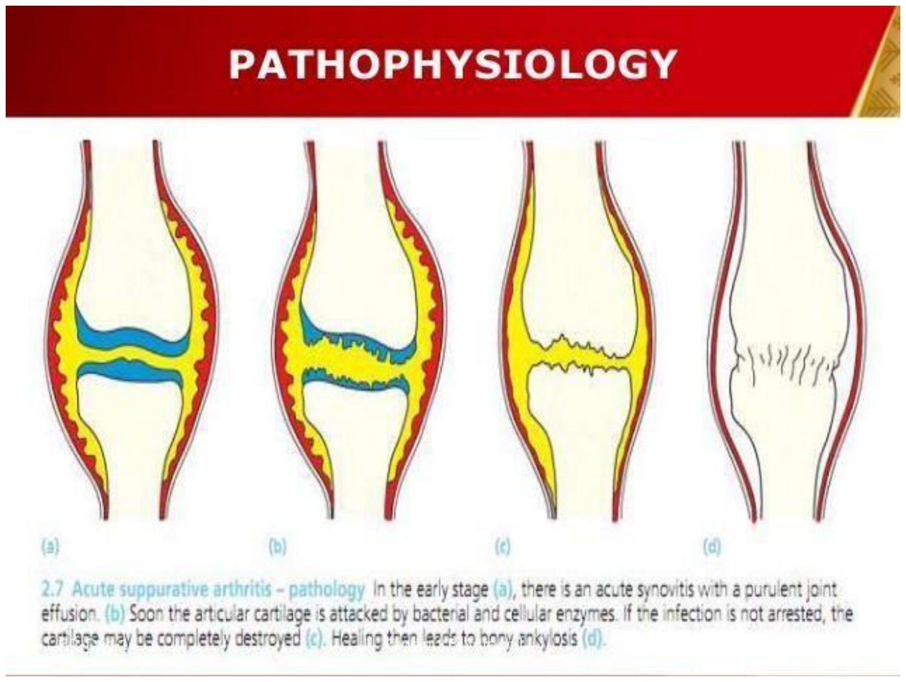
Why it's an emergency. From the 11.1 deck.| Organism | Share |
|---|---|
| Gram-positive cocci | 80%: staphylococci 60%+, streptococci 20% |
| Gram-negatives | 15%: the immunocompromised, elderly, neonates, IV drug users |
| Anaerobes | The rest |
Aspirate: 59 × 109/L, no crystals, Gram-positive cocci in clusters.
An infected joint is an infection in a closed space, like an abscess: it needs drainage. Repeat I&D until the surgeon is confident the joint is clean.
The deck uses cefotaxime (Dr. Devlin's choice in 11.1 is cefazolin). IV antibiotics for 4–6 weeks.
Mike's Toe Woes: Gout
48, works at a brewery, hypertension on hydrochlorothiazide 25 mg. Two days after a cholecystectomy (no HCTZ for 2 days): severe pain, swelling and redness of the first MTP. A similar episode in Mexico 2 years ago settled with an over-the-counter anti-inflammatory.
Gout: Who, Why and How It Looks
Acute inflammatory arthritis caused by uric acid (monosodium urate) crystal deposition in the joint; “the disease of kings” (rich food and drink). Aspirating a first MTP is hard (tiny joint, and the patient won't let a needle near it), but try.
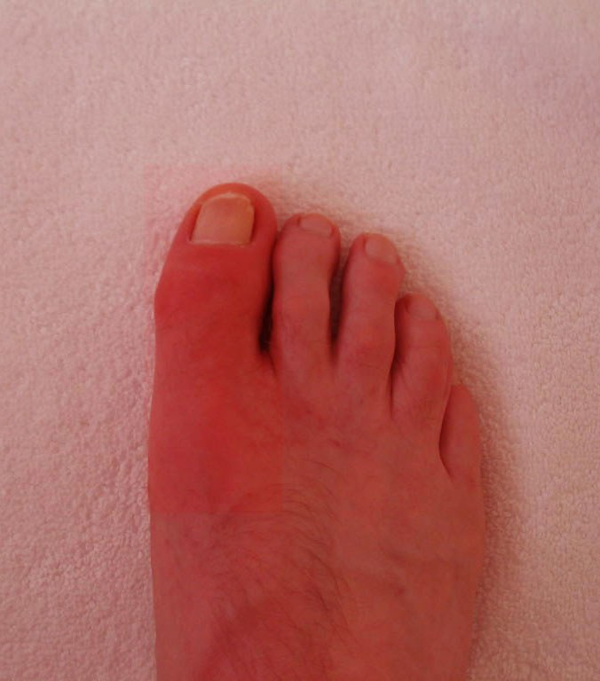
Acute gout of the first MTP (podagra). From the deck.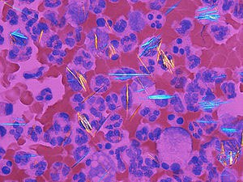
Urate crystals: needle-shaped, negatively birefringent (yellow when parallel to the compensator axis, blue when perpendicular). From the deck.The sink: uric acid comes in through the tap (cell turnover and dietary purines: meat, shellfish, alcohol) and leaves through the drain (the kidneys). Steady state: production = excretion. Under-excretion (a clogged drain) is the commonest cause of hyperuricemia. A full sink is fine; gout is when it overflows.
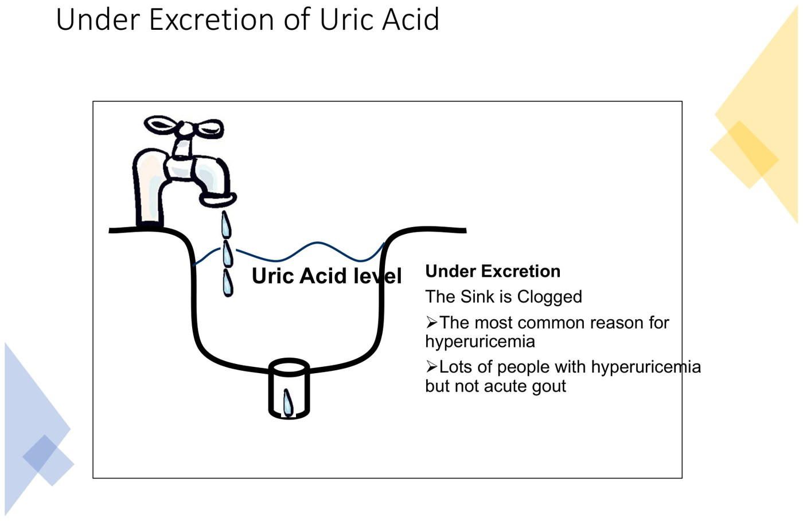
Under-excretion: the clogged drain. From the deck.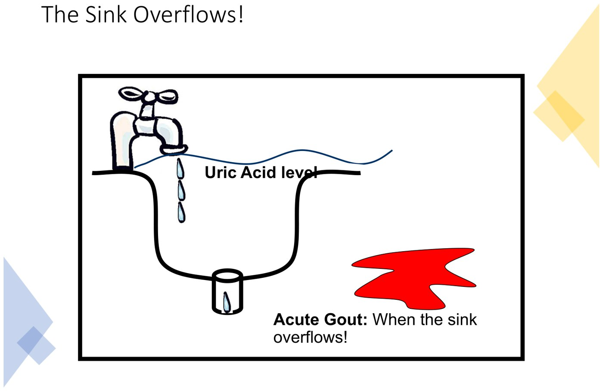
Acute gout: the sink overflows. From the deck.| Gout | |
|---|---|
| Who | First attack in men aged 35–50; in women after menopause (estrogen promotes urate excretion) |
| Risk factors | Impaired renal function; diuretics (furosemide, hydrochlorothiazide); excess alcohol (beer especially); family history; male sex |
| Associations (“a disease of plenty”) | Obesity, hypertension, diabetes, hyperlipidemia |
| Triggers: SMARTS | Surgery, Mechanical injury (micro-trauma may be why the big toe), Alcohol, Recent illness, Travel/dehydration, Starting or stopping allopurinol |
| The attack | Over a few hours, very intense; swollen, warm, red; can't bear the bedsheet; may be unwell with fever: looks just like an infected joint |
| Joints | Usually one lower-limb joint; first MTP in 50% |
| Duration | Untreated: 7–10 days |
| Recurrence | 60% within 1 year, 80% within 2, 90% within 5 |
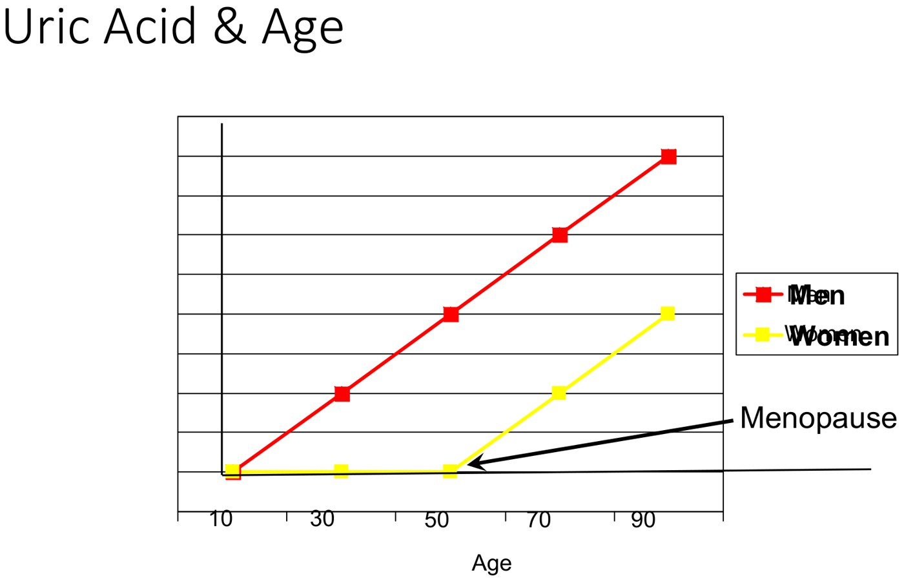
Confirming It, and the Bloodwork
The only proof is the aspirate: urate crystals, needle-shaped, negatively birefringent in polarized light.
| Order | Why |
|---|---|
| CBC | May show a high WBC and reactive thrombocytosis |
| Creatinine | Renal function (the drain) |
| Serum uric acid | Helpful if high, but can be normal during an attack: if it's normal and you still suspect gout, recheck after the attack |
| Fasting glucose, fasting lipids | The comorbidities |
Lots of people walk around with hyperuricemia and never get gout. So hyperuricemia can't make the diagnosis, and isolated hyperuricemia isn't treated, however high, if they've never had an attack.
Treating Gout: Mop the Floor, Then Unclog the Sink
First treat the attack (mop up the water); then decide whether to lower the level in the sink (treat the hyperuricemia).
| Acute attack | Details |
|---|---|
| Non-drug | Rest, ice, elevate; diet: meat and seafood (shellfish, crustaceans) bad, vegetables and low-fat dairy good; less alcohol (beer is high in purines); hydration |
| Intra-articular corticosteroid | Fast, effective, no systemic side effects; patients may refuse a needle in a very painful joint |
| Oral NSAID or COX-2 inhibitor | E.g. indomethacin 50 mg PO TID |
| Oral colchicine | 0.6 mg, up to q8h on the slide; diarrhea means most only tolerate it once or twice a day |
| Oral prednisone | When you can't inject: 30 mg daily × 2 days, then down 5 mg every 2 days (30, 30, 25, 25 … 5, 5, stop); the taper can be adjusted to the flare |
| Consider allopurinol when |
|---|
| 1. Recurrent attacks affecting their life (not one every couple of years) |
| 2. The patient is at risk from the drugs needed for acute attacks |
| 3. The patient accepts lifelong treatment |
| 4. Tophi (almost always start) |
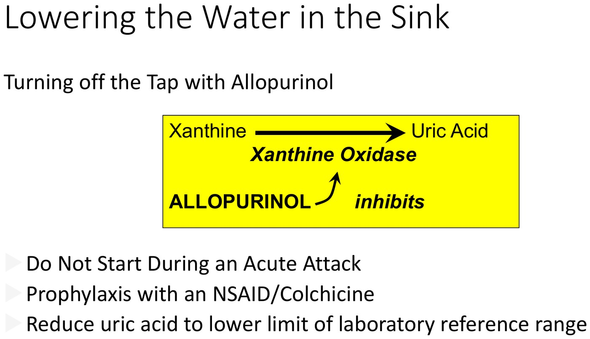
Allopurinol turns off the tap by inhibiting xanthine oxidase. From the deck.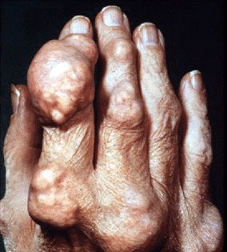
Tophi: urate deposits in skin and bone after years of hyperuricemia; urate-lowering therapy is indicated and can shrink them. From the deck.Any change in urate level, up or down, can trigger an attack. So don't start it during an acute attack (unless pain is well controlled), warn the patient, and give prophylaxis with an NSAID or colchicine. A flare after starting isn't a side effect, it's a known effect. Target: the lower limit of the lab reference range, < 360 µmol/L in Canada.
Mary's Sore Knees: Pseudogout
78, diabetes, high cholesterol, mild chronic bilateral knee pain worse with activity. After a brisk walk: severe right knee pain and swelling. Right knee very swollen, warm, mildly red, flexion only to 100°; left knee small cool effusion; early OA in the hands.
Pseudogout (Acute CPP Crystal Arthritis)
Acute inflammatory arthritis caused by calcium pyrophosphate (CPP) crystals. Proof is the aspirate: intracellular, rhomboid, positively birefringent crystals.
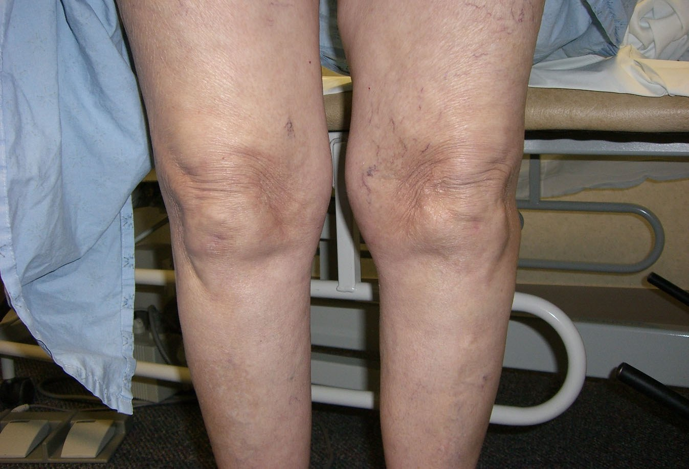
Mary's swollen right knee. From the deck.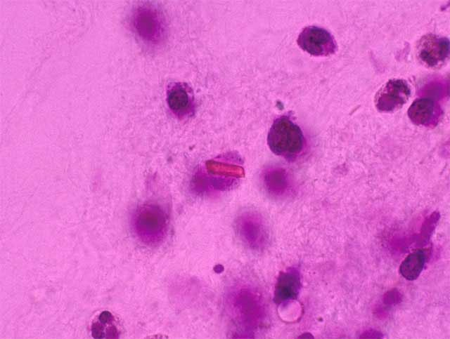
CPP crystal: rhomboid, inside a cell. From the deck.| Gout | Pseudogout | |
|---|---|---|
| Crystal | Monosodium urate | Calcium pyrophosphate |
| Shape | Needle | Rhomboid, intracellular |
| Birefringence | Negative | Positive |
| Who | Men 35–50; women after menopause | Older people, often with OA |
| Joint | First MTP (50%) | Knee (commonest) |
| Onset | Over hours, very intense | Fast, but less intense and slower to peak |
| Untreated attack | 7–10 days | Several days to a few weeks |
| Treatment | Steroid injection, NSAID, colchicine, prednisone; allopurinol long term | Rest, ice, elevation, hydration; intra-articular steroid (the knee is easy to tap and inject), NSAID, prednisone taper |
Pseudogout is the acute arthritis from CPP crystals in the joint. Chondrocalcinosis is a radiographic finding: CPP calcification in the cartilage. You can have chondrocalcinosis on x-ray without ever having an attack, so the x-ray doesn't diagnose pseudogout.
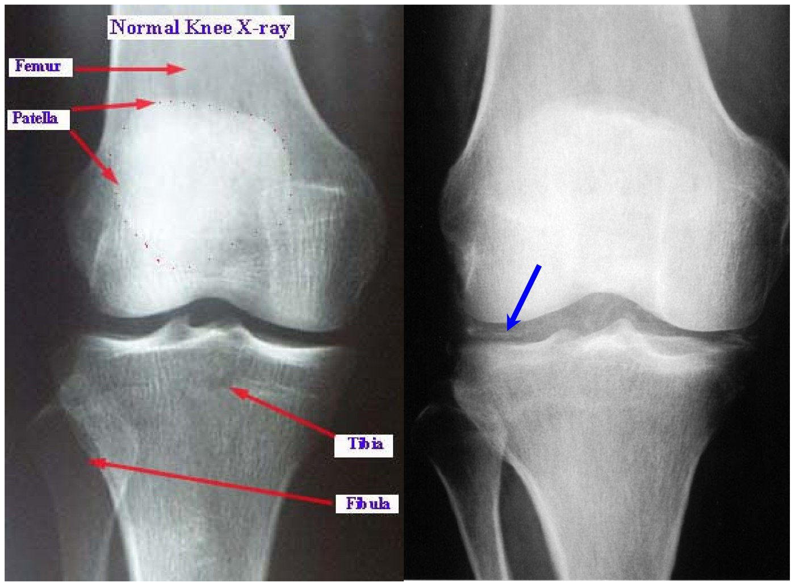
Built from Dr. G. Rohekar's “Acute Monoarthritis” deck (parts 1–3) and its three recordings. The module has no knowledge-check questions; the three cases stand in for them. Cartoons, stock photos and the wombat fact are left out. Notes: the recording says untreated gout lasts “about seven days” (slide: 7–10) and gives colchicine 0.6 mg once to twice a day (slide: q8h); the page gives both. The pseudogout recording's NSAID dose is garbled in the captions; the slide repeats indomethacin 50 mg PO TID. The estrogen effect on urate excretion is the slide's own explanation.